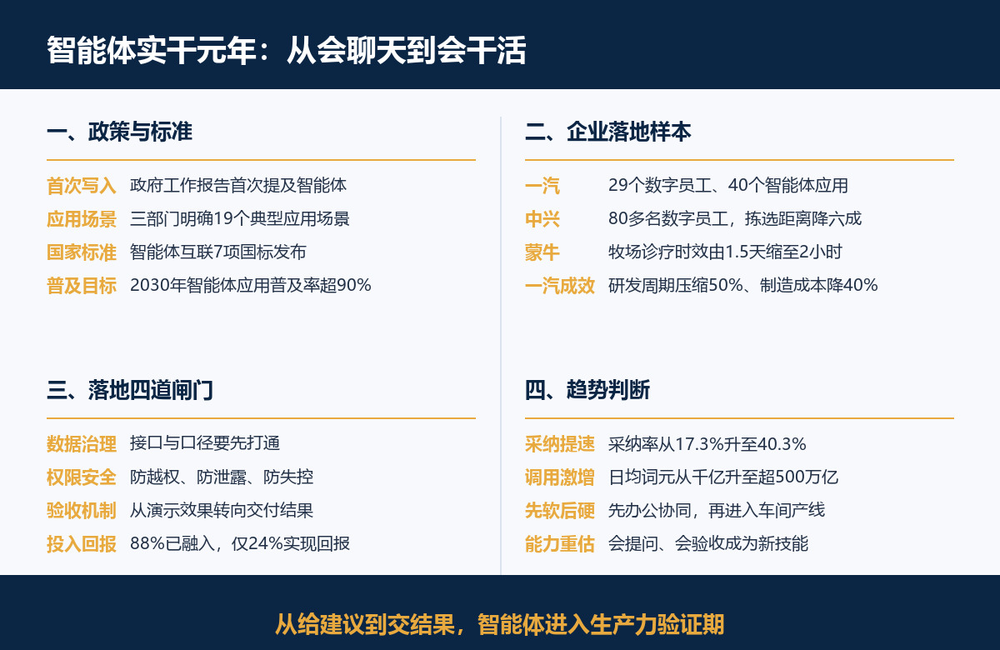

2026 年被很多人称为智能体的“实干元年”。政府工作报告首次提及“智能体”，三部门联合印发《智能体规范应用与创新发展实施意见》，明确 19 个典型应用场景，《人工智能 智能体互联》系列 7 项国家标准同步发布。产业端的数据更直接：我国企业智能体采纳率从 2024 年底的 17.3% 升至 2026 年上半年的 40.3%，日均词元调用量从 2024 年初的 1000 亿增长到今年 7 月的超过 500 万亿。但《毕马威 2026 全球技术报告》同时给出一个冷静的数字：88% 的受访企业已把智能体融入系统，只有 24% 真正实现投资回报。热度与回报之间的落差，正是当前企业最需要面对的现实。

一、事实层面：智能体从“给建议”走向“交结果”
中国工程院院士邬贺铨把智能体概括为“大模型＋记忆系统＋工具调用＋规划能力”的闭环：它以大模型为能力底座，具备自主感知、记忆、决策、交互与执行能力，能够调用工具帮用户把事办成。腾讯集团副总裁、腾讯云 CTO 王慧星的说法更直接：智能体的价值正从“给建议”转向“交结果”。
制造业里最先跑出数字。2026 年 7 月 15 日，中国一汽发布引入智能体架构的 OpenMind 2.0，覆盖技术开发、订单交付等七大核心业务板块。其中物料清单智能体每日主动规划并调度工程师作业上百次，实现 90% 以上工艺路线的自动编制。截至目前，一汽累计上线数字员工 29 个、智能体应用 40 个，2 万余名员工实时在线作业，人工审批节点精简 60%，研发生产周期压缩 50%，制造成本降低 40%。
中兴通讯南京滨江基地的立体仓里有 10 万多个库位，四向穿梭车、提升机、堆垛机协同为产线分派物料。“哪只箱子该在什么时间送到产线哪个位置，全靠多个智能体拿主意、下指令。”中兴通讯副总裁周建峰介绍，负责仓储优化的智能体在夜间按第二天订单优化编排，把高频物料提前挪到近端，月拣选距离从 40 多万米降到 16 万米。基地内已有 80 多名“数字员工”跑在业务线上，仅供应链场景每天词元消耗量就超过 90 亿。
办公与一线服务场景的账算得更细。长安汽车一位电气系统集成测试工程师借助办公智能体开发线束选型计算工具，单车型成百上千条线束的参数计算，过去由资深工程师手工完成约需两天，现在导入参数表后五分钟即可输出结果；随车文件核查从十几分钟缩短到一两分钟。蒙牛的一位一线员工把权威著作和多年经验“喂给”办公智能体，开发出为奶牛诊疗的 AI 工具，单牧场诊疗时效由 1.5 天缩短至 2 小时。
二、为什么现在热：技术、市场、政策三股力量同时到位
技术端，DeepSeek、智谱、MiniMax 等厂商的基础模型能力持续提升，任务理解、规划、工具使用、群体协同等关键技术取得新进展。“大脑”更强、“手脚”更灵活，支撑智能体快速普及。
市场端，2026 年上半年国内 AI 原生应用月活跃用户规模已达 4.99 亿，同比增长 85.4%，用户使用向事务处理场景快速渗透。IDC 数据显示，2025 年中国“AI 赋能的企业资源管理软件”市场规模达 3.157 亿美元，同比增长 96.1%。企业不再满足于用软件记录发生过什么，而是希望系统直接参与执行。
政策端，除了政府工作报告首次提及智能体、19 个典型应用场景和 7 项国家标准，国务院印发的《关于深入实施“人工智能＋”行动的意见》明确，到 2030 年新一代智能终端、智能体等应用普及率超过 90%。海外服务商也在规模化：西门子发布的工业专属工程智能体可独立完成可编程逻辑控制器编程、设备调试与产线方案设计，工程效率提升 2 至 5 倍；SAP 在财务、供应链、采购、人力资源与客户体验等核心领域部署了 224 个 AI 智能体与 51 个业务助手。
三、落地四道闸门：为什么 88% 接入只有 24% 赚钱
第一道闸门是数据治理与系统接口。智能体要调用企业数据完成任务，前提是数据口径统一、系统接口打通。数据散落在多个业务系统里，字段定义不一致，智能体拿到的输入就不干净，“交结果”无从谈起。
第二道闸门是权限与安全边界。隐私泄露、越权操作、行为失控是规模化落地的主要制约。企业必须按最小权限原则配置智能体可访问的资源，把操作留痕、敏感信息脱敏和关键动作的人工复核写进流程，而不是上线之后再补规则。
第三道闸门是验收机制。过去验收一个软件看功能是否齐全，验收智能体要看它能否稳定交付结果。企业需要在上线前约定可量化的指标：任务完成率、一次解决率、错误率、平均处理时长，以及出现异常时的回退路径。
第四道闸门是投入回报核算。算力、模型授权、系统改造、人员培训都是真实成本，收益则要以节省工时、降低错误率、提升响应速度来衡量。毕马威报告中 88% 与 24% 的落差，很大程度上说明很多企业还没把这笔账算清。中国电信公开披露的数据提供了一个参照：内部部署三百多个 AI 应用，客服智能体一次解决率 84.1%，研发代码生成率 50%，由 AI 驱动的销售订单达 107 万张，累计实现超过 14 亿元的提质增效。
四、趋势预判：智能体会先改变岗位，再改变组织
其一，从办公桌走向车间产线。腾讯全球数字生态大会上的共识是，智能体目前的主战场仍在办公协同、营销、客服等数字流程，输入是文档、数据、邮件、会议和系统记录，输出是报告、看板、设计稿或执行建议。下一步要跨过的是稳定、连续、可审计的生产级运行门槛，路径大概率是“先软后硬”。
其二，从单点工具走向中台化调度。迈富时以自研 AI-Agentforce 企业级智能体中台作为调度核心，把分散在各业务系统的能力收拢为 AI 可直接调用的统一运行环境；联想擎天在敦煌项目中统一调度文旅服务、文物保护和城市治理相关智能体。一个入口、全集团服务，正在成为大型组织采用智能体的主要形态。
其三，从通用模型走向行业技能沉淀。海王集团把 7000 多名药师的专业知识转化为可随时调用的技能，运营成本降低 80%；伊利将办公智能体与企业微信、小程序打通，由智能体汇聚业务数据、生成经营策略并下发给上千名导购，运营效率提升超过 50%。企业真正的护城河，不是调用了哪个模型，而是沉淀了多少行业知识与工作流。
其四，“会提问、会验收”成为新技能。智能体把执行环节压缩后，人的价值更集中在定义任务、判断结果和处理例外。产业学院与职业教育的课程需要相应重构：把提示词设计、任务拆解、数据治理、结果验收与风险边界纳入教学，而不是只教工具操作。
其五，标准化与合规同步推进。7 项智能体互联国家标准只是起点，权限审计、责任归属、日志留存、行为可解释性会逐步成为采购的硬指标。谁先把治理做在前面，谁就更容易把试点变成规模化。
结语
智能体最好的状态，不是替代人做决定，而是把人从重复劳动中释放出来，让人去做判断、协同和创造。对企业的现实建议是：先把一个流程跑通，把账算清，把边界划明，再谈规模化。
对研究院服务的政府、高校与企业客户而言，智能体不是一个可以买来的软件，而是一套需要数据、流程、人才和规则共同支撑的新能力。这也是数字经济与人工智能板块接下来最值得投入的方向。
本文所引数据来自公开报道与公开研究报告，相关分析为产业趋势研判，不构成投资或采购建议。